3 Công thức cách làm bún ốc Hà Nội đúng chất Hà thành cực ngon
Công thức 1 – Cách làm bún ốc Hà Nội ngon ngọt đậm đàNguyên liệu:
– Đậu phụ: 1-2 bìa
– Hành, tía tô…
– Dấm bỗng (vừa miệng ăn)
– Bún ăn kèm
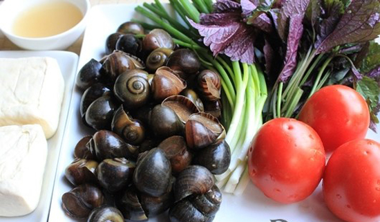Thực hiện: Bước 1: Các loại rau, cà chua, hành lá nhặt và rửa sạch.
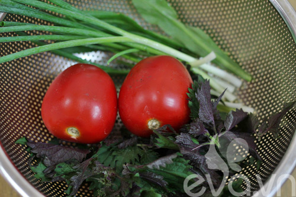Bước 2: Ốc mua về nếu có thời gian các bạn ngâm khoảng nửa ngày cho ốc ra chất bẩn và nhớt. Nếu không có thời gian các bạn ngâm ốc với vài lát ớt trong khoảng 1 giờ để ốc ra chất bẩn. Sau đó rửa sạch và đem luộc ốc.
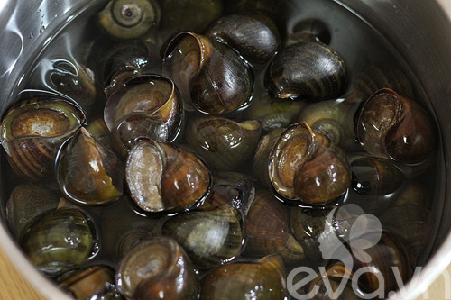Bước 3: Đậu cắt nhỏ rán vàng
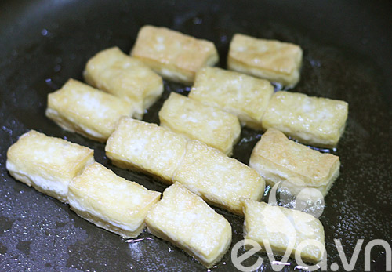Bước 4: Cà chua, hành lá, tía tô… thái nhỏ.
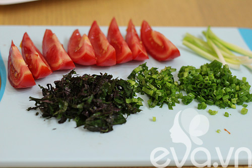Bước 5: Ốc luộc chín, dùng tăm khều ốc, sau đó rửa sạch với nước và bóp chút dấm để ốc hết nhớt. Nước luộc ốc chắt để riêng.
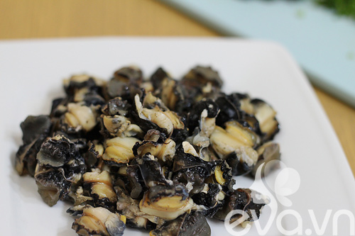Bước 6: Bắc chảo lên bếp, thêm dầu ăn và phi thơm hành, cho ốc vào chảo xào chín cùng với chút bột nêm cho đậm đà, trút ra đĩa riêng.
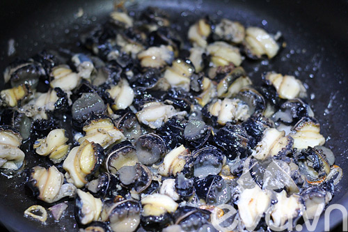Bước 7: Chưng cà chua để lấy màu.
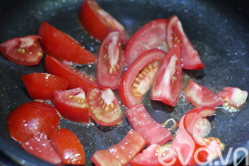Bước 8: Trong nồi nước luộc ốc, cho cà chua chưng vào, thêm đậu rán, nêm nếm gia vị vừa miệng ăn, cho dấm bỗng vào đến khi đạt được dộ chua như ý thì dừng. Để nước dùng sôi lại thì tắt bếp.
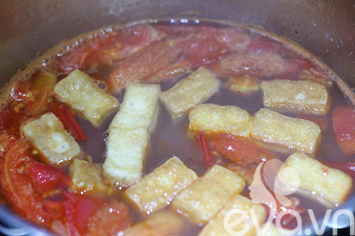Khi ăn lấy bún đã chần qua nước sôi ra bát, thêm ốc, hành, tía tô… và chan nước ốc lên trên.
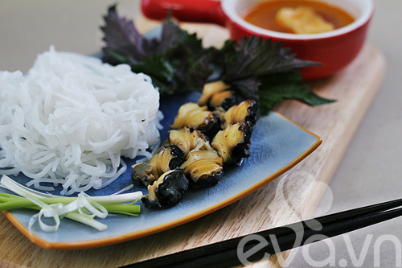Chúc các bạn ngon miệng với món bún ốc này nhé!
Công thức 2 – Hướng dẫn cách nấu bún ốc đơn giản nhất
1. Nguyên liệu làm món bún ốc (cho 5 người)– 2kg ốc bươu
– 1kg xương heo
– 0.5 kg cà chua
– 0.5kg xà lách
– 0.5kg rau thơm
– 200g hành hoa
– 10g tía tô
– 10g ngò gai
– 30ml giấm
– 10g muối
– 5g đường
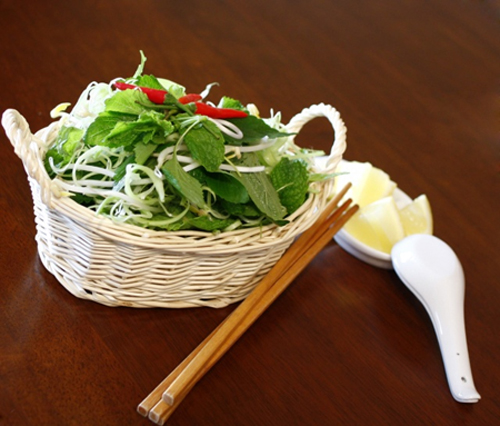Cách làm:
– Ốc rửa sạch, luộc chín, khêu lấy thịt.
– Hầm xương heo trong 90 phút cho đến khi xương chín kĩ.
– Cà chua cắt miếng nhỏ.
– Hành hoa, ngò gai, tía tô cắt nhỏ.
– 150g hành lá cắt khúc 2cm, đập dập, phi vàng.
– Nấu nước dùng: nước hầm xương + nước ốc + giấm + đường + muối
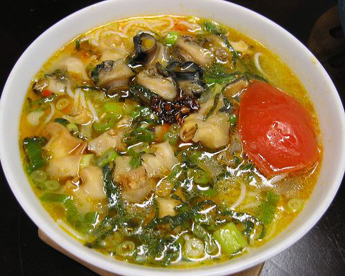– Cà chua xào sơ cho vào nước dùng, cho hành lá phi vàng vào. Múc bún vào tô, cho ốc, hành, ngò gai, tía tô lên, chan nước dùng vào.
– Món này múc ra bát khi còn nóng hổi, ăn với rau sốn ngon ơi là ngon bạn ạ.
Công thức 3 – Bí quyết làm món bún ốc của mẹ Hà thành
Bún ốc có vị chua chua của nước dùng với vị bùi của ốc ăn với chút rau sống và đậu rán làm tăng thêm vị ngon cho món bún ốc!
Những nguyên liệu em hay dùng để nấu bún ốc gồm:– Ốc( ốc nhồi, ốc biêu, ốc vặn) đều được
– Xương heo
– Cà chua
– Xà lách, rau thơm, hành hoa, tía tô, mùi ta
– Giấm bỗng
-Muối
-Đường
Cách nấu món bún ốc như sau:– Ốc ngâm trong nước gạo cho sạch nhớt và cát. Cho ốc vào nồi luộc với vài lát gừng cho thơm, khi thấy miệng ốc bong ra là được. Không nên luộc kỹ quá, ốc sẽ dai.
– Các mẹ nhớ giữ lại nước luộc ốc nhé. Rồi dùng que nhọn khêu phần thịt ốc ra (chủ yếu lấy phần miệng ốc) sau đó rửa sạch, để ráo.
– Xương lợn cho ba lít nước, ninh nhỏ lửa, vớt bọt cho nước dùng trong, nêm bột nêm. Ninh khoảng 30 phút (còn lại hai lít nước dùng) là vừa.
– Dùng một nồi lớn, cho nước luộc ốc, nước dùng, nước dấm bỗng, nước bột nghệ, bột nêm vào, đun sôi.
– Sâu đó, các mẹ cho dầu ăn vào chảo, phi hành thơm, rồi trút cà chua, ốc và bột nêm vào, xào khoảng ba phút là được, đừng xào lâu quá không là ốc bị dai đấy các mẹ ạ.
– Em thấy ngoài hàng họ không xào ốc mà ăn đến đâu nhể ốc đến đó. Ăn kiểu đó cũng ngon nhưng em cứ sợ bẩn vì họ không bỏ dải phân ốc đi. Nếu các mẹ thích mát thì không cần xào ốc, nếu thích vị đậm đà thì làm.
– Sau đó lấy bún chần qua nước sôi, cho vào tô, xếp thịt ốc, cà chua, ớt, hành lá, tía tô lên trên rồi chan nước dùng, ăn nóng.
Bún ốc ăn kèm với rau sống, nếu muốn ăn cay và chua, các mẹ có thể tăng thêm ớt, dẫm bỗng trong quá trình thực hiện.
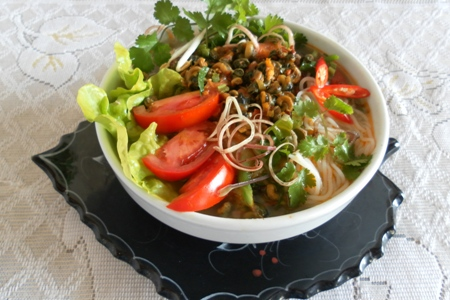Các mẹ nếu không có dấm bỗng thì thay bằng me hay quả chua gì cũng được, tuy nhiên sẽ ko ngon và thơm bằng vì dấm bỗng có vị chua rất thanh. Khi chọn ốc nhớ đừng lấy con to quá, ốc mít hay ốc lác sẽ ngon hơn ốc nhồi (ốc bươu) vì ăn giòn hơn. Công thức của em là thế và cả nhà em đều rất thích ăn món này nhưng ngon hay ko còn tuỳ thuộc vào người nấu nêm nếm kìa, nên các mẹ chú ý nêm nấu vừa ăn theo khẩu vị của nhà mình nhé. Chúc các mẹ thành công và có một bữa ăn ngon!